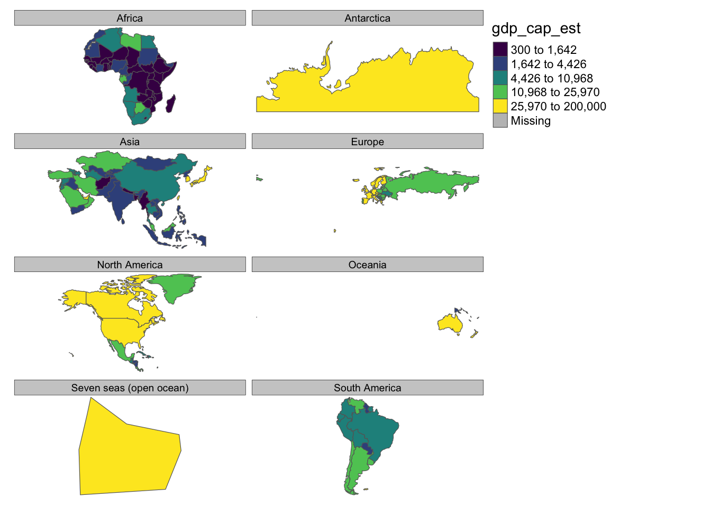
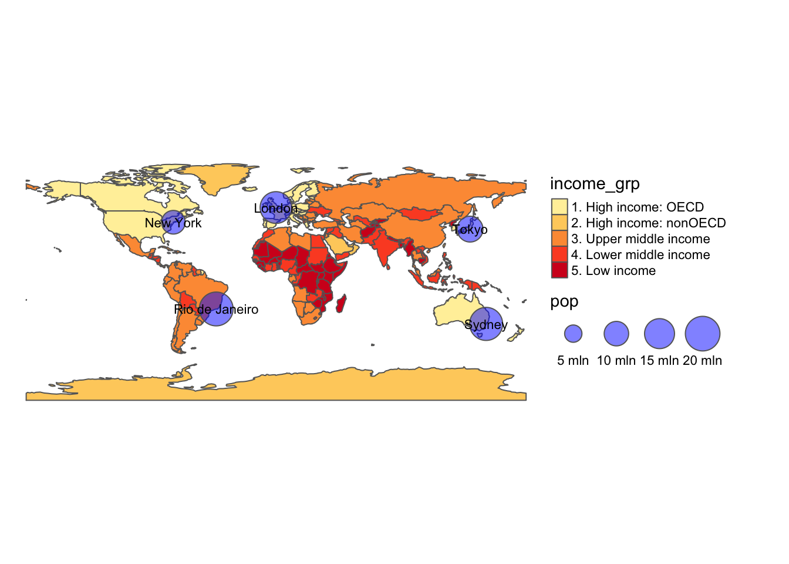
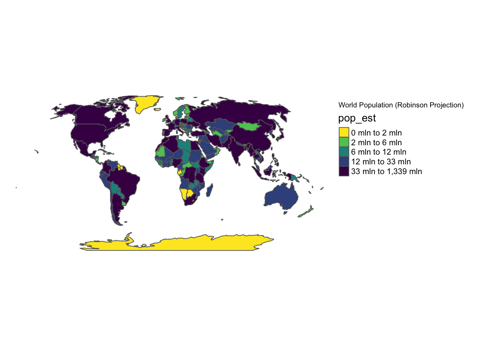
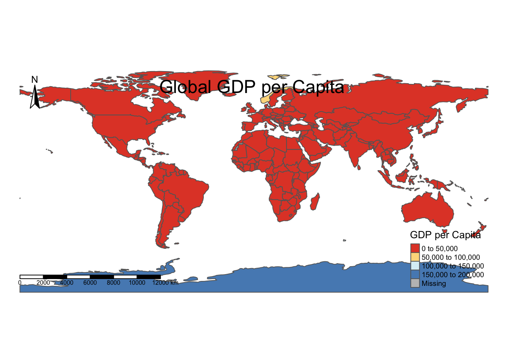

Related chart types

Map

Choropleth

Hexbin map

Cartogram

Connection

Bubble map
This post
explores advanced techniques for creating thematic
maps using the tmap package in R. It
covers complex usages with clear code explanations and reproducible
examples.
For an introduction to tmap, check this post.
We’ll use the tmap package along with
sf for some spatial data manipulation. We’ll continue using
the World dataset, but we’ll also create some point
data.
library(tmap)
library(sf)
data("World")
# Create some point data
set.seed(123)
cities <- st_as_sf(data.frame(
name = c("New York", "London", "Tokyo", "Sydney", "Rio de Janeiro"),
lon = c(-74.006, -0.1276, 139.6503, 151.2093, -43.1729),
lat = c(40.7128, 51.5074, 35.6762, -33.8688, -22.9068),
pop = round(runif(5, 5e6, 20e6))
), coords = c("lon", "lat"), crs = 4326)Faceting allows us to create small multiples based on a categorical variable.
This creates a separate map for each continent, allowing easy comparison of GDP per capita across different regions.
tm_shape(World) +
tm_polygons("gdp_cap_est", style = "quantile", palette = "viridis") +
tm_facets(by = "continent") +
tm_layout(frame = FALSE)
We can combine different types of geometries in a single map.
This map shows countries colored by income group and cities represented by bubbles sized according to population.
tm_shape(World) +
tm_polygons("income_grp", palette = "YlOrRd") +
tm_shape(cities) +
tm_bubbles(size = "pop", col = "blue", alpha = 0.5, scale = 2) +
tm_text("name", size = 0.7) +
tm_layout(legend.outside = TRUE, frame = FALSE)
tmap allows us to easily change map projections.
The projection argument in tm_shape()
allows us to specify any projection supported by the
PROJ library. Let’s create a map using the Robinson
projection:
tm_shape(World, projection = "+proj=robin") +
tm_polygons("pop_est", style = "quantile", palette = "-viridis") +
tm_layout(
legend.outside = TRUE,
title = "World Population (Robinson Projection)",
frame = FALSE
)
We can extensively customize the layout of our maps.
This example demonstrates how to customize the title, legend, and add elements like a compass and scale bar.
tm_shape(World) +
tm_polygons("gdp_cap_est", palette = "RdYlBu", style = "pretty", title = "GDP per Capita") +
tm_layout(
title = "Global GDP per Capita",
title.position = c("center", "top"),
title.size = 1.5,
legend.title.size = 1,
legend.text.size = 0.6,
legend.position = c("right", "bottom"),
frame = FALSE
) +
tm_compass(position = c("left", "top")) +
tm_scale_bar(position = c("left", "bottom"))
You might be interested in
Related chart types
👋 After crafting hundreds of R charts over 12 years, I've distilled my top 10 tips and tricks. Receive them via email! One insight per day for the next 10 days! 🔥